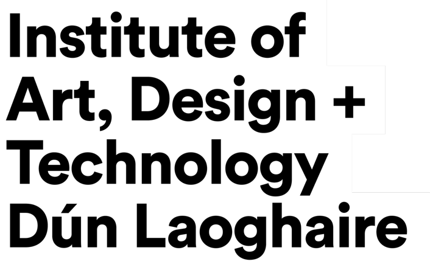
CREATIVE
COMPUTING.
Build what’s next.
Coding, design and imagination. Learn to build the next generation of digital products.
CODE.
DESIGN.
CREATE.
Practical computing skills, combined with creativity and an understanding of how people use technology.
Build
Websites, apps and interactive software.
Design
Digital products that work well for people.
Experiment
Different media, tools and creative approaches.
Solve
Real challenges, individually and in teams.
LEARN
BY DOING.
Small classes. Practical projects. Supportive teaching.
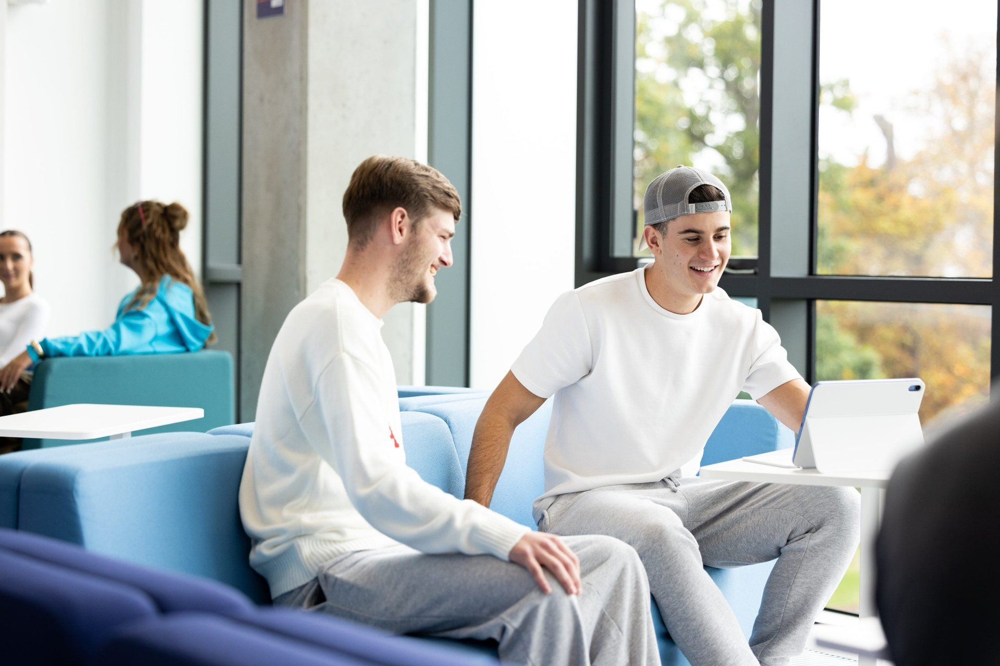
WHAT’S IT
REALLY LIKE
TO STUDY
CREATIVE
COMPUTING?
Hear it from someone doing the course.
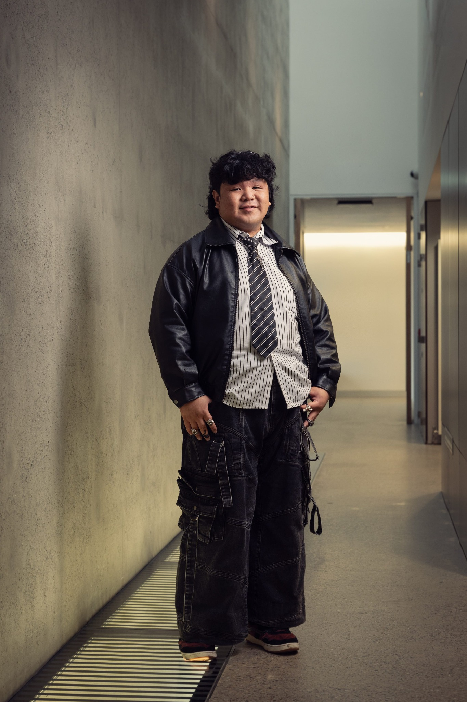
FOUR PHASES OF LEARNING
An overview of how the course develops across four years.
FOUNDATIONS
Learn programming, databases, computing concepts and web design.
DEVELOP
Build web apps, explore UX and creative coding, collaborate on projects.
SPECIALISE
Choose electives and take part in professional practice and placement.
CREATE
Advance your interests and produce a substantial major project.
BUILD THE FOUNDATIONS
Start coding and discover how digital products are designed.
Learn the building blocks of code and use them to solve problems.
Understand how computers represent, process and communicate information.
Turn initial ideas into web designs and digital media prototypes.
Collaborate across disciplines while developing creative thinking and college-study skills.
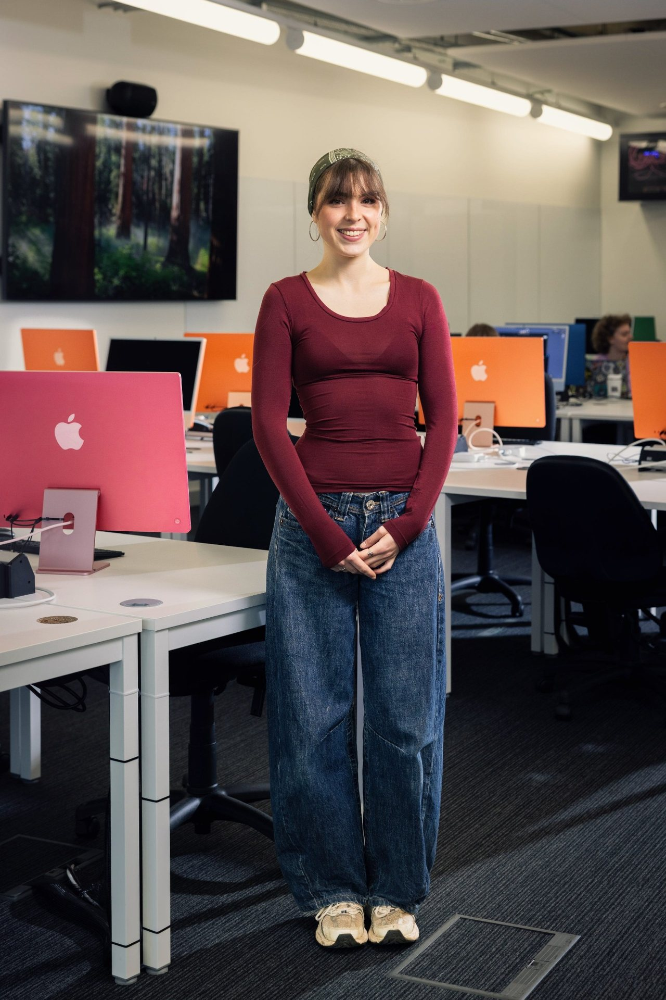
PUT IDEAS INTO PRACTICE
Bring your first programming and design skills together.
Bring your new skills together to plan and create a complete digital project.
Explore how information is organised, stored and retrieved.
Develop functional websites using the foundations of modern web technology.
Take on a practical workshop challenge through collaboration and experimentation.
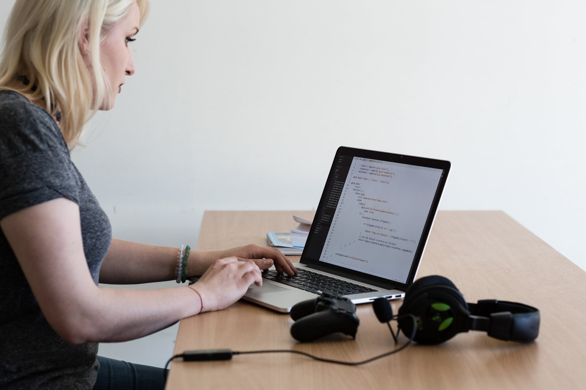
DESIGN + DEVELOP
Build richer software around the needs of real users.
Explore what users need and design more intuitive digital interactions.
Develop richer, more capable websites and web applications using modern frameworks.
Learn how to represent more complex relationships between data and how to access that information.
Use design and development frameworks to create consistent, stylish web interfaces.
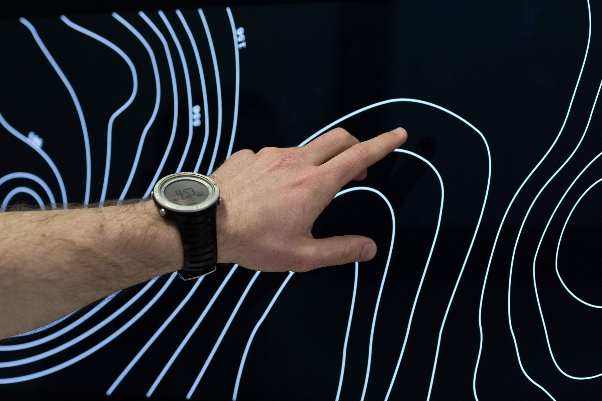
MAKE MORE AMBITIOUS WORK
Creative software, bigger projects and deeper technical knowledge.
Develop more advanced coding skills to create expressive visual and interactive work.
Combine all your skills to take a software idea through planning, development and testing.
Understand the hardware and operating systems behind digital applications.
Explore a different discipline area and broaden your perspective.
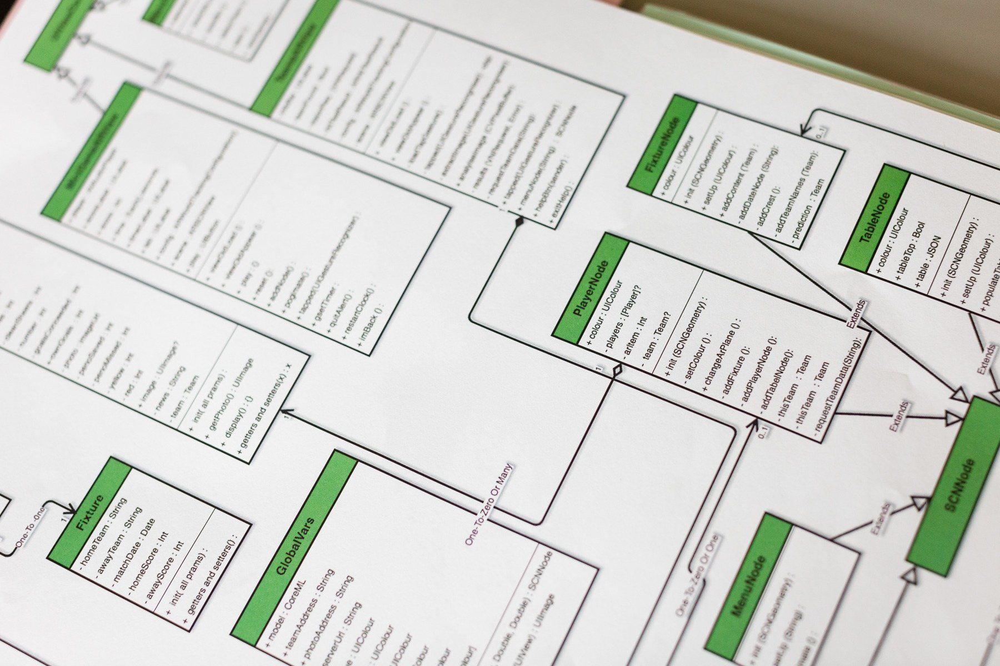
CHOOSE YOUR DIRECTION
One core module, plus two electives.
Discover how networks and cloud services power connected digital products.
Turn complex information into clear, engaging visual stories.
Build AI-powered applications with large language models, prompting and retrieval techniques.
Combine programming and game design to build engaging games.
Build complete web apps, connecting interfaces, server-side logic and databases.
Design and develop native digital experiences for mobile devices.
PUT SKILLS TO WORK
Professional practice, entrepreneurship and emerging ideas.
Apply your skills in a workplace setting and experience professional practice.
Learn how creative ideas can develop into viable products or ventures.
Investigate new technologies and how they could shape future digital experiences.
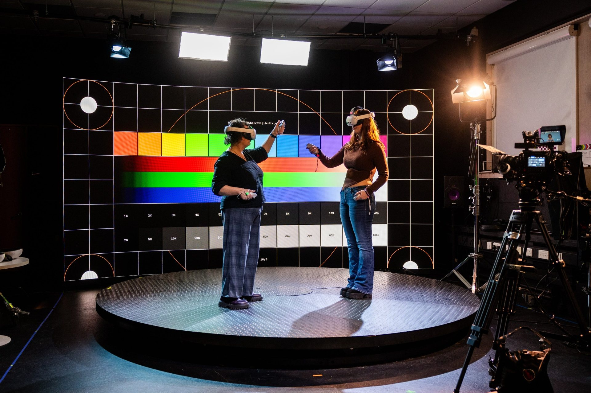
DEVELOP YOUR SPECIALISM
One core module, plus two electives.
Use research and data to investigate problems and inform decisions.
Take web apps from development to launch, using deployment, testing, security and performance optimisation.
Build intelligent agents, customise models and engineer sophisticated AI systems.
Analyse data to discover patterns, draw insights and support decisions.
Explore immersive experiences or digital content layered onto the real world.
Build devices using Arduino, Raspberry Pi, sensors, motors, LEDs and electronics.
BUILD YOUR MAJOR PROJECT
Bring together your strengths and show what you can create.
Create a substantial independent project that brings together your strengths.
Prepare for work or further study through critical reflection and professional skills development.
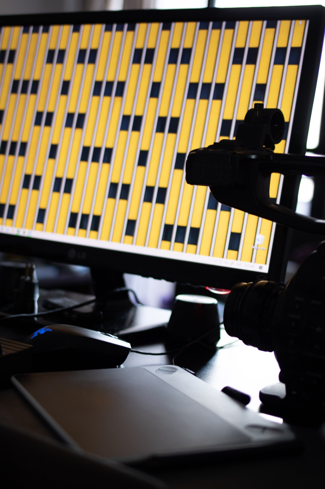
WHAT CAN YOU MAKE?
Recent Creative Computing graduate projects.
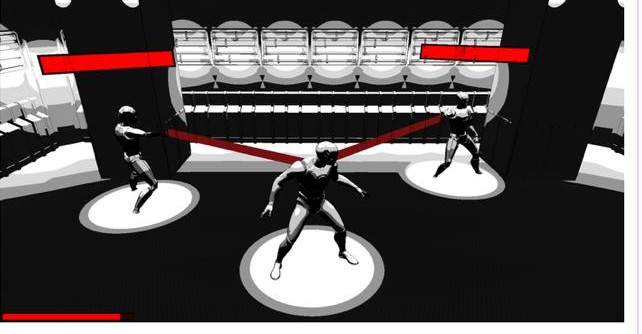
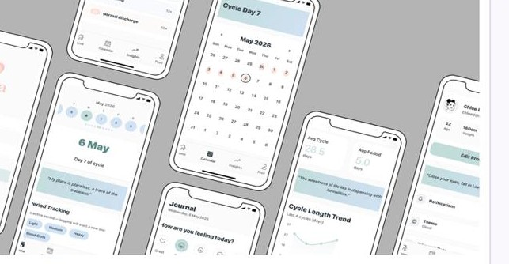
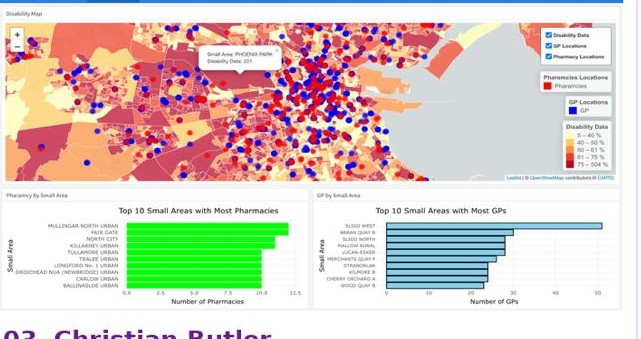
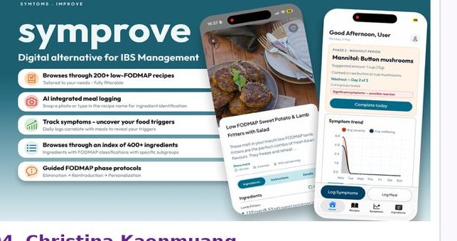
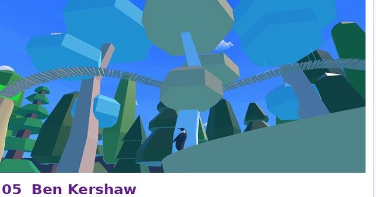
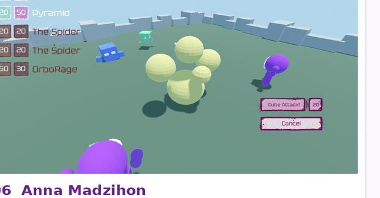
DESIGN + PROBLEM SOLVING
DATA + INTERACTIVE EXPERIENCES
MAKE IT YOUR OWN.
A shared foundation in Years 1 and 2, with increasing choice in Years 3 and 4.
BEYOND THE CLASSROOM.
Opportunities to put your learning into practice and experience something different.
PROFESSIONAL PRACTICE + PLACEMENT
Apply your skills in a workplace or professional setting and learn from practical experience.
ERASMUS + STUDY ABROAD
Explore opportunities to study in Europe through IADT exchange partnerships.
Options and availability are confirmed with the programme team.
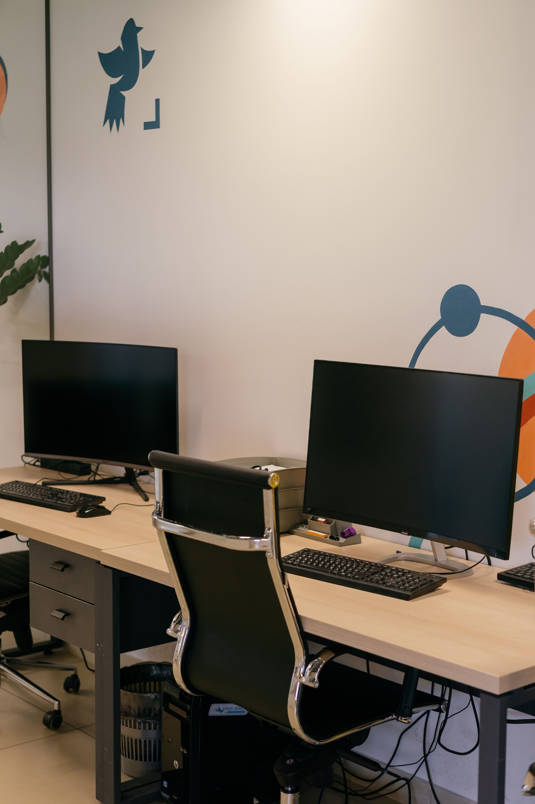
WHERE CAN
IT TAKE YOU?
of graduates employed within six months
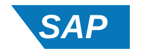
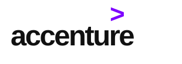
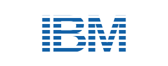
Examples of past graduate destinations, not a guarantee of employment or a list of current industry partners.
A CREATIVE
PLACE TO STUDY.
A friendly creative community, with opportunities beyond your course.
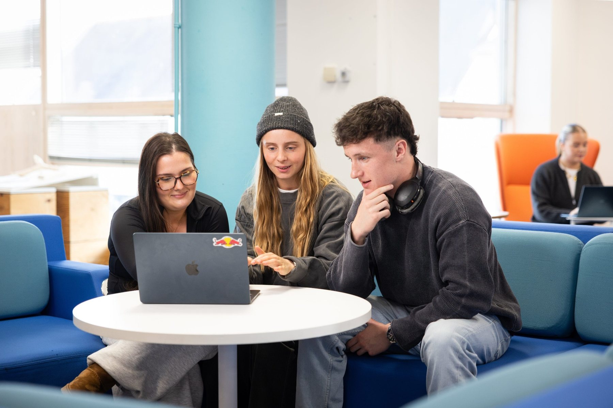
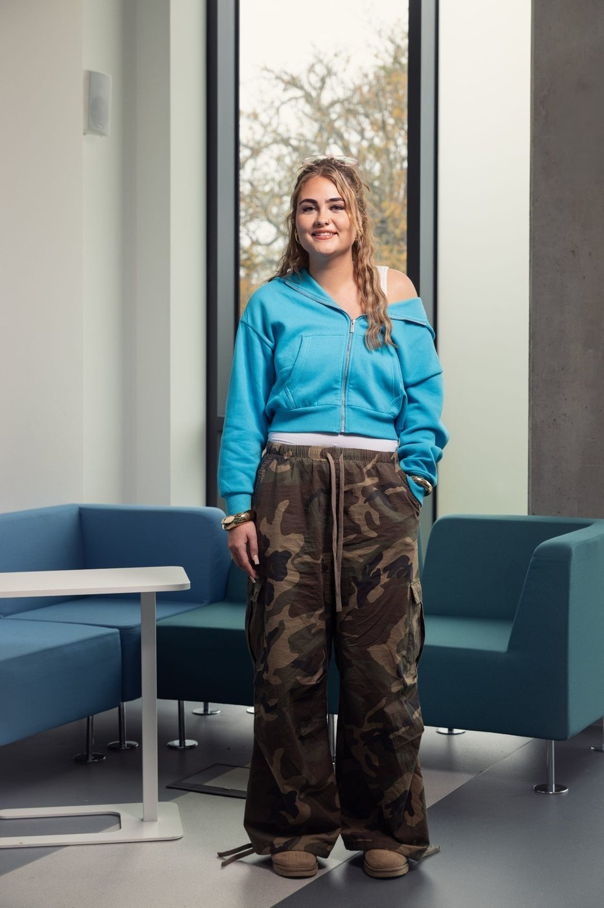
YOUR NEXT
STEP STARTS
HERE.
QUESTIONS?
Scan for course details
and how to apply.
Programme Chair
catherine.noonan@iadt.ie